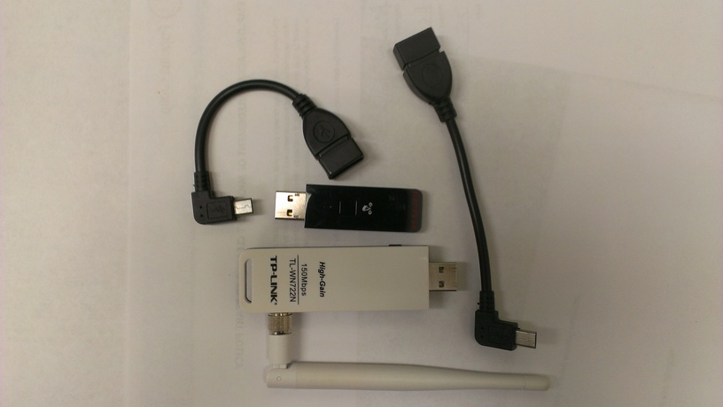
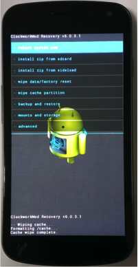

WiSense Installation Guide
Here, you can find step-by-step instructions to install WiSense on your device. It is an easy installation process which should not take more than 15 - 20 minutes. We recommend you to watch the video below before starting with the set up.
Prerequisites
Is your device supported?
Before starting with the set up, please make sure that you have one of the devices mentioned in the Supported Devices section.
Following are the prerequisites to install WiSense on your Android device:
Any machine (Linux, Mac, Windows) with the Android SDK and tools installed (for adb and fastboot). You can also download (and unzip) Android's adb and fastboot tools from here.
Make sure that the USB debug mode on your android device is enabled. Go to Settings > Developer options. Turn on the "Developer options" toggle button (top right). Also select the "Android USB debugging" option, if not already done yet. Note: On Android 4.2 and higher, the Developer options screen is hidden by default. To make it available, go to Settings > "About phone" and tap Build number seven times. Return to the previous screen to find Developer options.
[You can skip this step if the device is already unlocked]. Unlock bootloader for installing the WiSense platform on your android device. Instructions are available at the "Unlocking the bootloader" section here. Note that this will void your device warranty.
Any Atheros AR9271 chipset based wireless adapter (e.g., Netgear WNA1100, TP-LINK TL-WN722N etc.) and a USB OTG cable to connect the wireless adapter to your android device. Check this list for all supported AR9271 based adapter's.

Setup Instructions
Following are the guidelines to download and install WiSense on an Android device:
Step 1: Install ClockWorkMod (CWM) recovery [Requires unlocked device]
You can skip this step if your device already has CWM or another recovery tool installed. The ClockWorkMod recovery firmware provides a very easy way to backup your current system as well as install the WiSense update to the device.
Download the "Touch Recovery" version of ClockWorkMod recovery image on a machine based on your device type (Galaxy Nexus vs. Nexus 7).
Using a terminal, go into the directory containing the Android adb and fastboot tools (downloaded in Step 1). Otherwise, if Android SDK is already installed on your machine, adb and fastboot tools should be in the "platform-tools" sub-directory of your Android SDK. Connect your Android device to the development machine using a USB cable. Make sure the "USB debugging mode" is enabled on your Android device.
Execute "./adb reboot-bootloader" on terminal to reboot the device into the bootloader mode.
Using the fastboot tool, flash ClockWorkMod Recovery onto your device by entering the following command: "fastboot flash recovery "<path\\_to\\our_recovery_image.img>" where the "your_recovery_image.img" is the name of the CWM file that you downloaded.
Reboot the android device by choosing the "Start" option in the bootloader (press the power to select option).
Step 2: Download and install the WiSense update image on your device
Download the SuperSU update zip file (for rooting) and correct WiSense update image to your machine based on your device type and OS from here.
Connect your Android device to the development machine using a USB cable and copy the WiSense image to your device using "./adb push <path_to_wisense_image_name.zip> /mnt/sdcard/". The file transfer may take upto 20 seconds.
Also push the SuperSU updat using "./adb push <path_to_supersu_file.zip> /mnt/sdcard/".
After the copy is complete, boot the device into recovery mode by running the following command: "./adb reboot-bootloader". Use the "Volume Up" button to go to the "Recovery Mode" option and select it (press power button). Now, you should see a screen similar to the one below:
 Recommended: Backup you current system image using CWM by selecting the "backup and restore" option in the main menu. Press backup option to start the system backup operation (may take upto 10 minutes). This operation creates a backup of your tablet image on the sdcard.
Go back to the main menu and clear the cache by using the "wipe cache partition" option.
Now, we are ready to install the WiSense update image. From the main menu, choose "install zip > choose zip from /sdcard". Now find the downloaded Wisense update zip file in the menu (file maybe in the "0/" directory) and click the filename to install.
Now, apply the SuperSU image update in the same fashion. From the main menu, choose "install zip > choose zip from /sdcard". Now find the downloaded SuperSU zip file and click the filename to install.
Go back to the main menu and reboot the device. Reboot operation may take upto a couple of minutes. You should now have the WiSense kernel update installed on your device! :)
Finally, just install the WiSense Android app from Google's Play Store. Happy 'WiSense'ing !!! :)

Troubleshooting
SuperSU: Make sure that SuperSU is present in the main APPS menu. If not, goto to Settings > Apps > All > SuperSU (shows the app info). Select "uninstall update" and make sure that the app is enabled. Click here for image snapshot.
When you run WiSense for the first time, it will ask the user for root permissions. Make sure that you accept the request.
Make sure the WiFi is enabled on your Android device while running WiSense. Otherwise, some features may not work correctly.
{kind=link}
Need Help with Installation?
Please feel free to get in touch with us in case you need any help at any step. Whether it be updating the kernel, installing, downloading or using the application on your device, or anything else, we are here to help you throughout the installation process. Please find our contact information in Contact us section, and we also welcome your comments in the Comments Section.
To enable wider adoption of WiSense, we also offer to do the installation for you, thereby giving you following options:
- If you already have one of the listed Supported Devices (with bootloader unlocked), you can ship it to us.
- Else, you can also order one of the Supported Devices on any merchant site (like, Amazon or Google Play), and ship it to our address.
In either case, we'll need the following information from you:
- Primary Contact Name
- Email Address
- Phone Number
- Tracking Number of your shipment
- Mailing Address